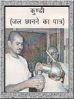
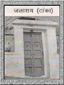

| जल छानने का पात्र |
|

परमहंस सन्तों की परम्परा में सन्तो के इस पावन धाम में परमहंस सन्तों के जन छानने का एक पत्थर का ऐसा पात्र है जिससे पानी छनता है। जोधपुर के तत्कालीन शासक ने सोने का कड़ा लगाकर ये पत्थर की कुंडी श्री सेवगरामजी महाराज को अर्पित की। महाराज ने सोने का कड़ा पुन: भेज दिया और पत्थर की कुण्डी जल छानने हेतु रख ली। परमहंस सन्त वस्त्र नहीं रखते थे। भगवतकृपा से प्राप्त अलौकिक कुण्डी सन्तों को प्राप्त हुर्इ जो आज भी रामद्वारा में दर्शनार्थ देवालय में स्थापित है। अंग्रेजों के शासन में रामद्वारा के पास में ही रहने वाले अंग्रेजों ने कुंडी को देखकर सोचा कि कहीं ये महात्मा झूठ तो नहीं बोलते। उन्होंने कुण्डी से पत्थर तोड़कर परीक्षण किया। तब उनको विश्वास हुआ कि वास्तव में पत्थर की कुंडी है। उस जमाने में उन्होंने कुंडी के दस हजार रूपये कीमत लेकर कुंडी देने को कहा। सन्तो ने मना कर दिया। अलौकिक कुंडी एक आश्चर्य है। पहले कुंडी से चारों ओर पानी छनता था। बाद में हर कोर्इ चिकने हाथ लगाने लगा, जिस कारण अब केवल नीचे की ओर से ही पानी छनता है। |
| जलाशय टांका |
|

सन्तों की तपोस्थली श्री बड़ा रामद्वारा सूरसागर में जल-व्यवस्था हेतु श्री परमहंस रामवल्लभजी महाराज ने 1989 आसोज कृ. 3 को जलाशय टांके का निर्माण कराया। वर्षा के समय रामद्वारे की छतों पर बरसने वाला जल इस टांके में संग्रहीत करके पीने के जल के रूप में उपयोग होता है। परिक्रमा - सन्तों के पावन धाम की परिक्रमा हेतू रामद्वारा के चारों ओर फर्श की पक्की परिक्रमा बनी हुर्इ हैं। सन्तजन-भक्तजन रामद्वारा की परिक्रमा करके अपने आप को जन्म-मरण चक्र से मुक्त करते हैं। नवविवाहित दम्पत्ति भी जात देते समय परिक्रमा करते हैं। |